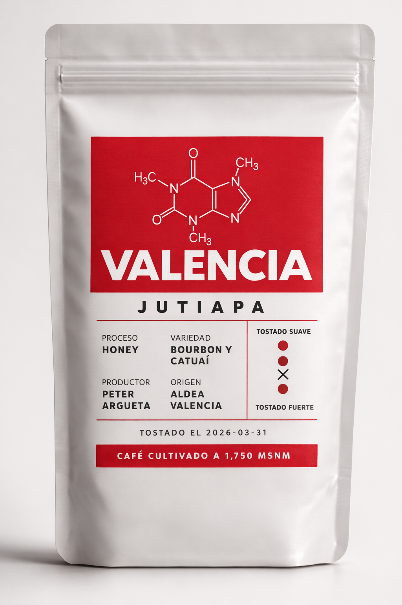
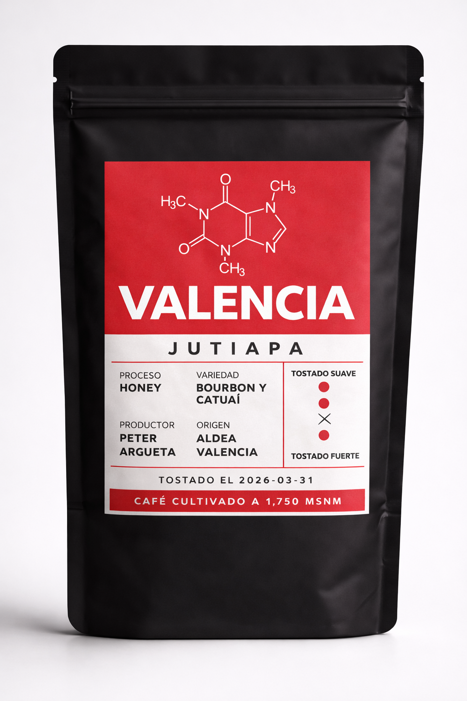
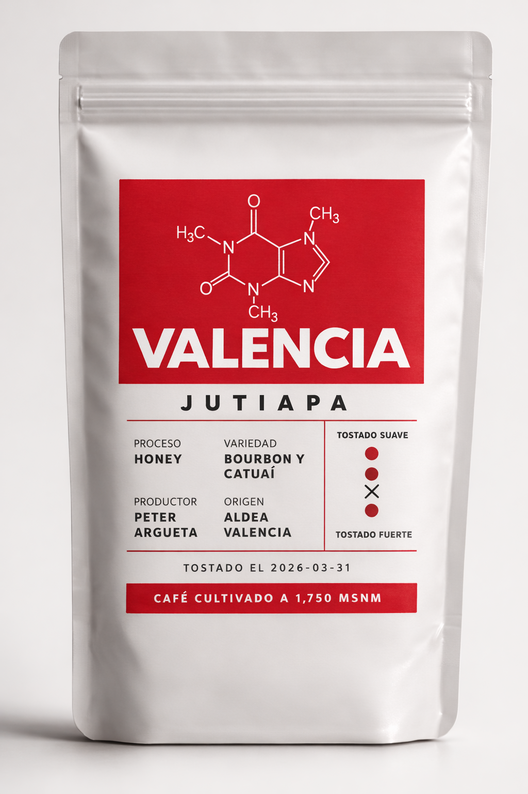

Origen
Aldea Valencia, Jutiapa. Café cultivado entre 1,750 y 1,800 msnm con identidad territorial clara y enfoque en calidad.
Desde aldea Valencia, Jutiapa, ofrecemos café de sombra cultivado entre 1,750 y 1,800 msnm, con variedades Bourbon y Catuaí y proceso honey.

Una propuesta visual minimalista, origen definido y un producto que puedes presentar con orgullo tanto en venta directa como en redes sociales.
Aldea Valencia, Jutiapa. Café cultivado entre 1,750 y 1,800 msnm con identidad territorial clara y enfoque en calidad.
Proceso honey, pensado para conservar dulzor, cuerpo y una taza limpia con buen carácter.
Una marca visual limpia en rojo, blanco y negro para presentar el café de forma profesional y memorable.
Por ahora se muestran dos productos principales. Luego podemos agregar más lotes, perfiles de taza y nuevas presentaciones.

Lote principal de la marca, cultivado en aldea Valencia, Jutiapa, con proceso honey.

Otro lote del proyecto, con variedades Bourbon y Catuaí, empacado para venta directa.

La finca se ubica en la aldea Valencia, Jutiapa. El café se cultiva entre 1,750 y 1,800 metros sobre el nivel del mar, en un entorno de sombra con árboles de gravileo.
Trabajamos con variedades Bourbon y Catuaí, buscando una producción cuidada desde la finca hasta la presentación final del producto.
Actualmente nuestro proceso principal es honey, lo que aporta identidad al café y refuerza un perfil que queremos seguir desarrollando como marca.
Aquí puedes mostrar la bolsa blanca, la bolsa negra, café en cereza, café secándose, la finca, el proceso y una taza preparada.


Podemos dejar listo este espacio con tu número de WhatsApp, Instagram, Facebook, dirección, horarios y enlace directo para pedidos.
Escribir por WhatsAppPor ahora los pedidos se realizan directamente por WhatsApp. Allí puedes consultar disponibilidad, coordinar entregas y confirmar tu pedido de Café Valencia.
Pedir ahora